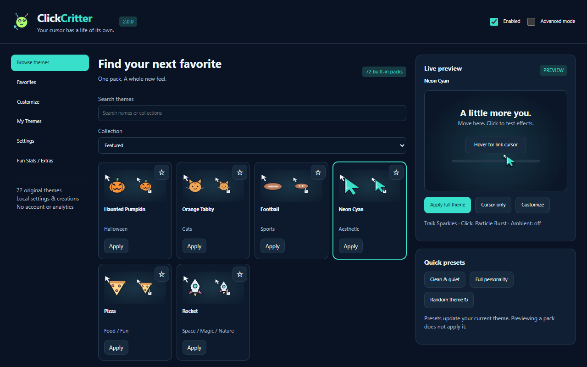
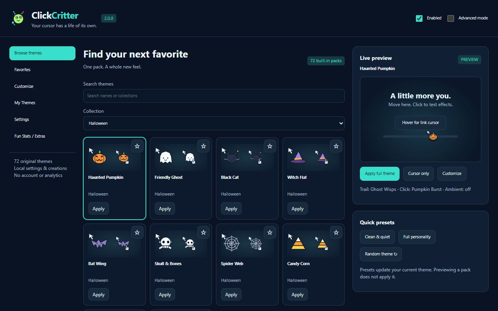
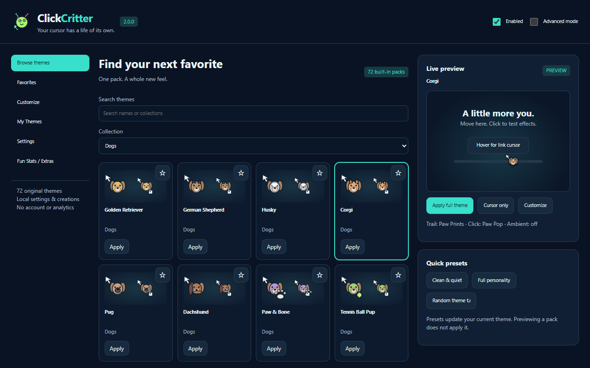
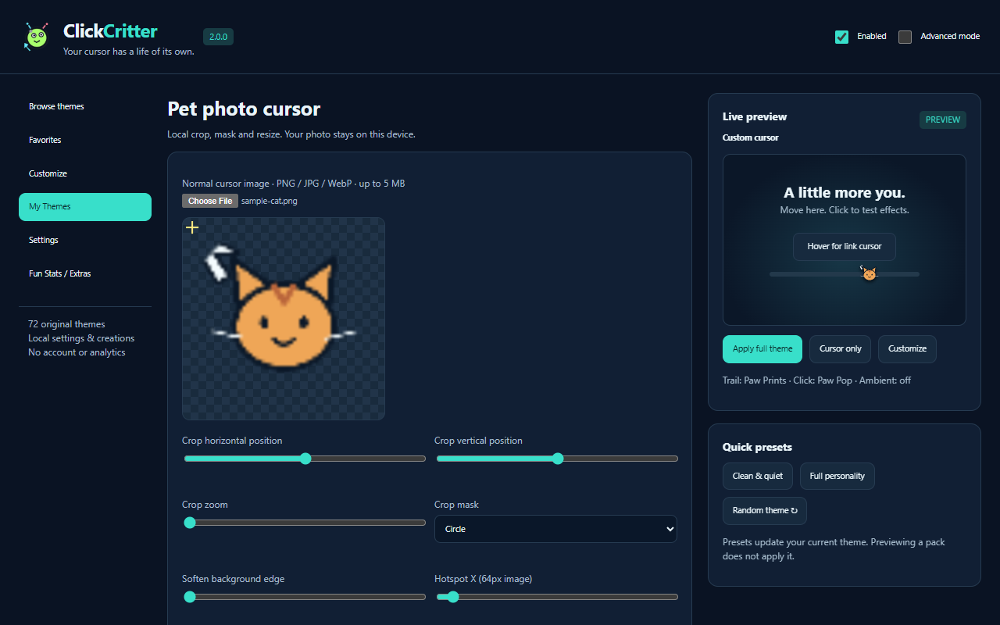
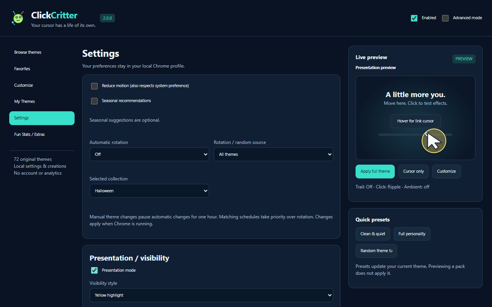

72 original theme packs
Browse Halloween, Christmas/Winter, Cats, Dogs, Sports, Aesthetic, Food/Fun and Space/Magic/Nature. Every pack has original normal and link cursor artwork.
Customize your cursor with themed packs, trails, click effects, seasonal styles and your own creations. ClickCritter 2.0 brings more personality to everyday browsing while keeping settings and photos local.

Pick a complete theme in seconds, then customize as much—or as little—as you like.
Browse Halloween, Christmas/Winter, Cats, Dogs, Sports, Aesthetic, Food/Fun and Space/Magic/Nature. Every pack has original normal and link cursor artwork.
Sparkles, paws, snow, ripples, confetti and more. Pick a subtle style or use Clean & Quiet. Ambient effects are optional.
Crop a local photo, make a pet cursor, choose team colors and save combinations in My Themes. Validated theme import/export stays local.
Keep favorites close, switch randomly or rotate daily/hourly. Seasonal recommendations help you find timely styles without locking your choices.
Large cursors, black/white contrast, yellow highlight, halo, optional spotlight/crosshair and click ripple help with tutorials and screen sharing.
Start by choosing a full pack. Advanced mode adds detailed effects, optional Page Accents, local schedules and user-created per-site profiles.
Actual screenshots from the 2.0 release build.

Original Halloween and winter collections are bundled locally.

Cute pets and original generic sports artwork. No team logos.

Mix components, build a local cursor and save your own theme.

Use high-visibility presentation tools or a quiet everyday style.
Themes, cropped cursor images, settings and user-created domain rules stay in your Chrome profile. Optional Fun Stats retains V1 progress without locking any theme behind XP.